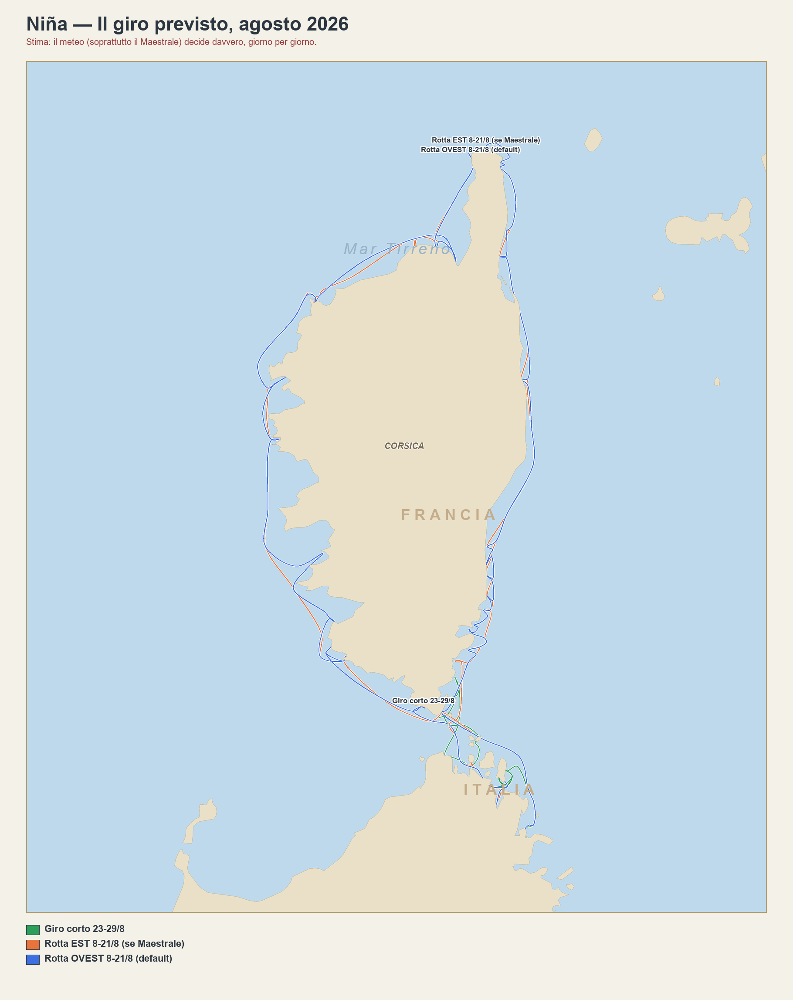

Il giro previsto
Come pensiamo di girare Corsica e Sardegna dall'8 al 29 agosto — a grandi linee, non tappa per tappa.
La mappa

Tocca per ingrandire.
Le 3 varianti
Il giro in senso antiorario: dalla Maddalena su per la costa ovest della Corsica (Bonifacio, Girolata, Saleccia, San Fiorenzo), la parte più bella. Cambio equipaggio del 15/8 a San Fiorenzo.
Alternativa in senso orario, costa est riparata dal vento. Cambio equipaggio del 15/8 a Bastia invece che San Fiorenzo — il traghetto ospiti arriva comunque lì, poi 40 min d'auto se serve raggiungere l'altra sponda.
Ultima settimana: un giro tra le isole a nord della Sardegna (Maddalena, Spargi, Budelli) e il sud della Corsica (Rondinara), secondo il meteo del momento.
Tappe fisse
Caricamento…
Queste date non si spostano col meteo: sono i cambi equipaggio (voli/traghetti già prenotati). Tutto il resto — dove si dorme le altre notti — è la parte che decide il bollettino.